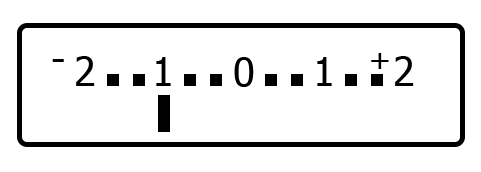

Photography Workshop 1
Topics
- Automatic vs Control
- How does a camera work
- Controlling the exposure
- How does a camera measure light
Automatic
vs
Control
No more Auto mode!
We will take pictures using the aperture priority mode (Av / A on camera)
Depth of field

Examples of small and large depths of field


How does a camera work
Source: Anuskafm, CC BY-SA 3.0

Bron: Hanabi123, CC BY-SA 2.5
Controlling exposure
Aperture
Aperture completely open
Aperture half open

Aperture blades
Why do we want to control the aperture?
Control the depth of field
(Use Av / A (or M) mode)
Examples of small and large depth of field
Aperture & f-number
Large aperture = large lens opening = low f-number
- f/1.8
- Lens is 'wide open'
Aperture & f-number
Small aperture = small lens opening = high f-number
- f/8
- Lens is 'stopped down'
f-stop

- Each step halves the available light = (f-)stop
- From f/2.8 to f/8: light is reduced by 3 stops
- From f/2.8 to f/8: light is reduced 8x times
Excercise: aperture priority
Set your camera in Av/A mode and see how the f-number changes when you turn the dial.
Aperture effect on depth of field

- f/1.8 (50mm, distance: 1m)
- 2.6cm depth of field
- f/5.6 (50mm, distance: 1m)
- 8.3cm depth of field

- f/8 (50mm, distance: 1m)
- 11.7cm depth of field
- f/11 (50mm, distance: 1m)
- 16.6cm depth of field
What incluences depth of field?
- Aperture
- Length of the lens
- Distance to subject
Formula to get an image with a small depth of field

Formula to get an image with a high depth of field
Apps to calculate depth of field
- Android: Photo Tools (https://play.google.com/store/apps/details?id=ru.neverdark.phototools&hl=nl)
- iOS: Simple DoF Calculator (https://itunes.apple.com/nl/app/simple-dof-calculator/id301222730)
f-number
f-number = length of lens / diameter of lens
50mm / 35mm = f/1.4
ISO
ISO = adjustment of the sensor signal
Standard = ISO 100
Increased to ISO 400
ISO values
... 100, 200, 400, 800, 1600, 3200, 6400 ...
- With each step the signal is doubled = (f-)stop
- The noise will also increase!
- Guidelines:
- Sunny day: 100-200
- Cloudy day: 400-800
- Inside: 800-6400+
Why do we use ISO?
If we can't get away with adjusting aperture/shutter speed.
Effect of ISO

ISO 100

ISO 6400

Excercise
Set the ISO to 1600.
Take two pictures (in Av/A mode) of the same subject: 1 with a large aperture (low f number) and 1 with a small aperture (high f number).
Is there a difference in shutter speed? If so what is the difference?
Shutter speed
'Curtain' in front of the sensor
Closed shutter

Shutter opens briefly

Little light on the sensor = short exposure
Shutter opens longer

A lot of light on the sensor = long exposure
Why do we want to control the shutter speed?
Control how movement is captured
(Use Tv / S (or M) mode)
Some examples

Shutter speed values
... 1/250, 1/125, 1/60, 1/30, 1/15, 1/8, 1/4, 1/2, 1" ...
- With each step the exposure time is doubled = (f-)stop
- Range of most cameras: 1/4000 - 30 sec
- 1/ is often ommited in the display, so 250 = 1/250 sec.
- 1" = 1 sec
Effect of shutter speed

1/250 sec

1/3 sec

Excercise
Set the ISO to 1600.
Take two pictures (in Tv/S mode): 1 with a short shutter speed (e.g. 1/100) and 1 with a longer shutter speed (1/15).
Is there a difference in aperture? If so what is the difference?
We can control the exposure via
- Aperture
- Shutter speed
- ISO
Equal exposure
| Aperture | Shutter speed | ISO |
| f/4 | 1/125 | 100 |
| f/5.6 | 1/60 | 100 |
| f/5.6 | 1/125 | 200 |
| f/5.6 | 1/250 | 400 |
How does a camera measure light?
Sensor measures light before a picture is taken.
18% (neutral) gray

What is the subject is not 18% gray?
Snowy landscape
Night scene
Exposure compensation

- Unit: stops of EV (Exposure value)
- On camera: button with +/- sign
Over expose

Light environments: in the snow, on the beach
Under expose
Dark environments: in a church, dark alley, at night
Excercise
Take two pictures of the same subject (in Av/A mode). Once without exposure compensation and once with exposure compensation (+ or - 2EV).
What is the difference in shutter speed?
Types of light measurements

Excercise
Take two pictures (in Av/A mode) of a subject which both has light and dark features. Use the spot mode to measure the light. Take one picture while pointing at a light area and take another picture while pointing a a dark area.
Are the pictures very different in exposure?
Home work
- Take two pictures of the same subject (in Av/A mode): 1 with a very small depth of field and 1 with a very large depth of field.
- Optional: Take one picture (in Tv/S mode) to capture movement.
Questions / remarks / homework
marcduiker@gmail.com